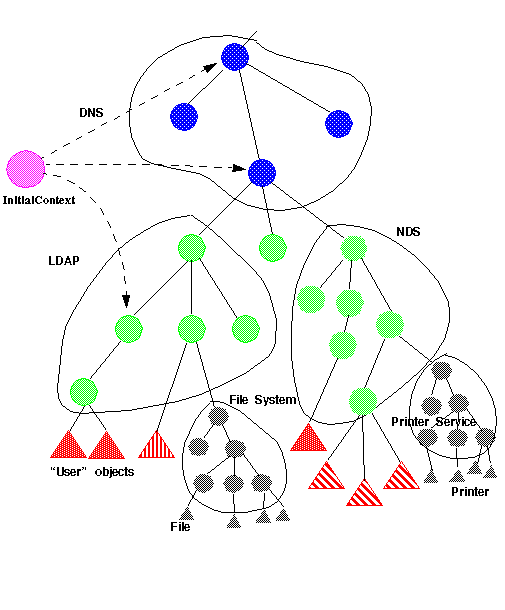

| 목차 | 전의 항목 | 다음의 항목 | JNDI API |
디렉토리 서비스에서는, 네트워크 환경내의 사용자 및 자원에 대한 다양한 정보에 대한 액세스가 제공됩니다. 또, 네이밍 시스템을 사용해, 이러한 정보를 표현하는 디렉토리 객체의 식별 및 체계화를 합니다. 디렉토리 객체에 의해, 속성과 값을 관련지을 수 있습니다. 따라서, 디렉토리 서비스를 사용하면, 정보를 계층화할 수가 있어 인간이 이해할 수 있는 이름과 디렉토리 객체를 매핑 할 수가 있습니다.
모든 컴퓨팅 시스템의 기본 기능은, 네임 서비스입니다. 네임 서비스에 의해, 이름과 객체를 관련지어 이름을 기본으로 해 객체를 검출할 방법이 제공됩니다. 종래의 시스템에서는, 많은 경우, 네임 서비스는 단체에서는 기능하지 않습니다. 일반적으로은, 파일 시스템, 디렉토리 서비스, 데이타베이스, 데스크탑, 메일 시스템, 스프레드쉬트, 달력 등, 그 외의 서비스와 통합됩니다. 예를 들어, 파일 시스템에는, 파일과 디렉토리용의 네임 서비스가 짜넣어지고 있습니다. 또, 스프레드쉬트에는, 셀과 매크로용의 네임 서비스가 짜넣어지고 있습니다.
기업의 컴퓨팅 환경은 일반적으로, 몇개의 네임 서비스로 구성됩니다. 예를 들어, 일부의 네임 서비스에서는, 조직, 물리 사이트, 사용자, 컴퓨터등의, 기업내의 공통 엔티티의 이름을 붙이기 위한 문맥이 제공됩니다. 또, 파일 서비스, 메일 서비스, 프린터 서비스등의 서비스를 제공하는 어플리케이션에도, 네임 서비스가 짜넣어집니다. 사용자의 관점으로부터 보면(자), 이러한 네임 서비스의 사이에는, 사용 목적에 따라 논리적인 관계가 존재합니다. 예를 들어, 파일, 메일, 어포인트 달력 등, 다양한 서비스의 이름은, 일반적으로은 사용자의 문맥으로 결정합니다. 또, 사용자에 대해서는, 일반적으로은 기업의 부서의 문맥으로 결정합니다. 이러한 관계를 고려해 실용적으로 네임 서비스를 배치하면, 알기 쉬운 이름을 작성할 수가 있습니다.
모든 이름은, 네이밍 규약으로 불리는 몇개의 구문 규칙에 의해 생성됩니다. 기본명이란, 이름의 각 컴퍼넌트입니다. 네이밍 규약의 정의를 참조해 주세요.
복합명이란, 네이밍 규약에 따라 합성한 0 개 이상의 기본명의 순서입니다.
예를 들어, UNIX 의 경로명의 경우, 왼쪽에서 오른쪽으로 늘어놓을 수 있었던 기본명이, slash (/)로 단락지어지고 있습니다.
usr/local/bin라고 하는 UNIX 의 경로명은,usr,local, 및bin라고 하는, 3 개의 기본명의 순서로 구성되는 복합명입니다. 또, 인터넷의 Domain Name System (DNS)의 이름의 경우는, 오른쪽에서 왼쪽으로 늘어놓을 수 있었던 기본명이 닷 (. )(으)로 단락지어지고 있습니다. DNS 명의 sales.Wiz.COM 는,COM,Wiz,sales라고 하는 기본명의 순서로 구성되는 복합명입니다.기본명으로 객체가 관련짓고는, 바인딩 (또는 바인드)으로 불립니다.
문맥이란, 몇개의 기본명으로 바인드 되고 있는 객체입니다. 모든 문맥에는, 네이밍 규약을 관련지을 수 있고 있습니다. 문맥에서는, 객체를 돌려주는 룩 업 (해결) 조작을 합니다. 또, 이름의 바인드와 언바인드(unbind), 바인드 된 이름의 일람표시등의 조작을 하는 일도 있습니다. 문맥 객체내의 기본명은, 같은 형태외의 문맥 객체에 바인드 할 수 있습니다. 이 문맥은 서브 문맥으로 불려 복합명을 생성합니다.
복합명은, 각 연속하는 문맥의 각각 연속하는 기본적인 컴퍼넌트가 차례차례 룩 업 되어 해결됩니다. 이 복합명의 해결은, UNIX 파일의 이름부 방법 과 유사합니다. UNIX 의 디렉토리는 문맥에 상당해, UNIX 의 경로명은 복합명에 상당합니다.
네이밍 시스템은, 같은 네이밍 규약을 관련지을 수 있어 같은 형태의 문맥의 집합으로, 각 문맥은 서로 접속되고 있습니다. 또, 같은 시멘틱스를 가져, 같은 조작을 실시합니다.
이름 공간은, 네이밍 시스템내의 모든 이름의 집합입니다.
복합명은, 복수의 네이밍 시스템에 걸치는 이름입니다. 복합명에서는, 0 개 이상의 컴퍼넌트가 차례로 줄지어 있습니다. 각 컴퍼넌트는, 각 네이밍 시스템의 이름 공간의 이름입니다.
예를 들어,
jurassic.eng:/export/home/jdoe/.signature라는 이름은, 복합명입니다. 즉, 호스트 이름 공간의 jurassic.eng 라고 하는 호스트명, 및 UNIX 파일명 마에조라간의/export/home/jdoe/.signature라고 하는 파일명으로 구성되어 있습니다. 또,http://www.moon.org/public/index.html라고 하는 인터넷 URL 도 복합명입니다. 「URL schema ID」이름 공간의 schema ID 인 http, Web 서버가 가동하고 있는 머신의 DNS 명인www.moon.org, 및 파일명 마에조라간의public/index.html라고 하는 파일명으로 구성됩니다.모든 이름은 특정의 문맥에 관련지어 해석되어 모든 네이밍 조작은 특정의 문맥 객체상에서 실행됩니다. 클라이언트는, 초기 문맥 객체를 취득해, 개시시에 이름의 해결을 실시합니다.
네이밍 시스템의 주요한 기능은, 이름과 객체의 매핑입니다. 임의의 형태의 객체를 매핑 할 수 있습니다. 「디렉토리 객체」는, 컴퓨팅 환경내의 다양한 정보를 표현하기 위해서 사용되는 특정의 형태의 객체입니다. 디렉토리 객체에는, 속성을 관련지을 수가 있습니다. 속성은, 1 개의 식별자 물어 구두인가의 값으로 구성됩니다.
디렉토리 객체에서는, 속성의 작성, 추가, 삭제, 및 디렉토리 객체에 관련지을 수 있고 있는 속성의 변경을 실시하는 조작을 합니다. 디렉토리 객체를 네이밍 문맥이라고 보면(자), 디렉토리 정보를 트리 구조로 표현할 수 있습니다. 이 경우, 내부 노드는 네이밍 문맥에 대응해, 내부 노드에는 속성도 포함됩니다.
다음의 복합 이름 공간의 예에, 몇개의 항목을 나타냅니다.
복합 이름 공간의 예

- 복수의 네이밍 시스템을 1 개의 복합 이름 공간에서 표현할 수가 있습니다. 이 예의 경우는, DNS 가 글로벌 네이밍 시스템으로서 사용되고 있습니다. 여기로부터, NDS 와 LDAP 가 분기 하고 있습니다.
- 각 이름 공간은, 네이밍 문맥을 표현하는 내부 노드로 구성됩니다. 이 내부 노드는, 디렉토리 객체이기도 합니다. 또, 임의의 형태의 객체를 리프 노드로 할 수 있습니다.
- InitialContext 는, 다양한 네이밍 시스템 및 디렉토리 시스템의 초기 문맥에 바인드 하도록(듯이) 구성되어 있습니다.
- 어플리케이션은 복합 이름 공간을 참조할 뿐입니다. 어플리케이션으로부터는, 여기에 배치되고 있는 임의의 네이밍 시스템에 바인드 되고 있는 임의의 형태의 객체에 액세스 할 수 있습니다.
- 각 서비스에는, 독자적인 이름 공간을 짜넣을 수가 있습니다. 이 이름 공간은, JNDI 로 최초로 참조됩니다.
- 임의의 디렉토리 서비스를 추가해, 임의의 디렉토리 서비스에 액세스 할 수가 있습니다. 클라이언트 어플리케이션을 변경할 필요는 없습니다.
Uniform Resource Locator (URL)는, 구문이, URL 의 정의로 결정되는 특수한 복합명입니다. JNDI 의 클라이언트로부터, URL 를 사용해 임의의 형태의 객체를 참조할 수 있습니다. 예를 들어,
nfs://nfs.sun.com/export/jndi/src/README라고 하는 복합명을 사용해, Network File System (NFS) 프로토콜로 액세스 해야 하는 파일 객체도 참조할 수 있습니다. 또,ldap://ldap.widget.com/cn=Jonathan, ou=marketing라고 하는 URL 를 사용해, LDAP 서버의 디렉토리 객체에 대해서 디렉토리 조작을 실행할 수 있습니다.일반적으로은, 복합명을 지원할 경우에, 복합명을 처리하기 위한 복합명 구문과 유틸리티를 JNDI 에 정의합니다. 이 결과, JNDI 의 클라이언트로부터, 복수의 이름 공간에 걸치는 이름이 사용되고 있는 객체를 참조할 수가 있습니다.
컴퓨팅 환경내에서 네임 서비스 또는 디렉토리 서비스의 중요성이 더하는 만큼, 서비스의 변경을 관리하기 위한 관리 및 감시 툴이 필요하게 됩니다. 이러한 툴 및 그 외의 어플리케이션을 사용하는 경우는, 종래의 요구 및 응답형의 대화를 확장할 필요가 있습니다. 즉, 비동기 통지 모델의 대화에 의해, 어플리케이션과 서비스의 변경과의 관련을 등록할 필요가 있습니다.